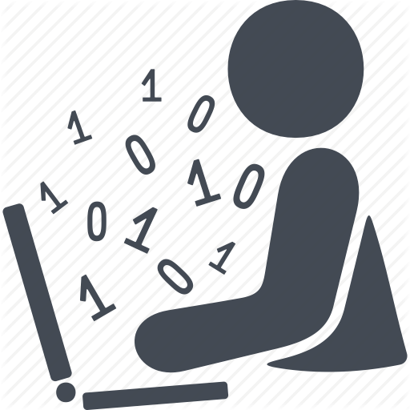
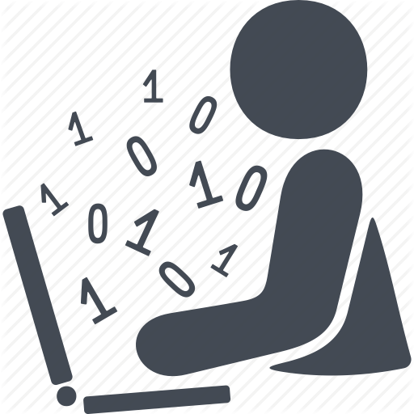
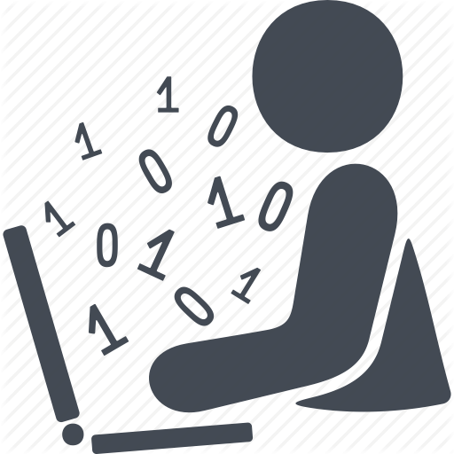
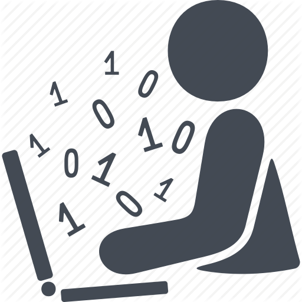

Computer programming is the process of designing and building an executable computer program for accomplishing a specific computing task. Programming involves tasks such as: analysis, generating algorithms, profiling algorithms' accuracy and resource consumption, and the implementation of algorithms in a chosen programming language (commonly referred to as coding)[1][2]. The source code of a program is written in one or more languages that are intelligible to programmers, rather than machine code, which is directly executed by the central processing unit. The purpose of programming is to find a sequence of instructions that will automate the performance of a task (which can be as complex as an operating system) on a computer, often for solving a given problem. The process of programming thus often requires expertise in several different subjects, including knowledge of the application domain, specialized algorithms, and formal logic.

A programming language is a formal language, which comprises a set of instructions that produce various kinds of output. Programming languages are used in computer programming to implement algorithms. Most programming languages consist of instructions for computers. There are programmable machines that use a set of specific instructions, rather than general programming languages. Early ones preceded the invention of the digital computer, the first probably being the automatic flute player described in the 9th century by the brothers Musa in Baghdad, during the Islamic Golden Age.[1] Since the early 1800s, programs have been used to direct the behavior of machines such as Jacquard looms, music boxes and player pianos.[2] The programs for these machines (such as a player piano's scrolls) did not produce different behavior in response to different inputs or conditions.
for more information.


 You Can Contact Us By These Links...
You Can Contact Us By These Links...